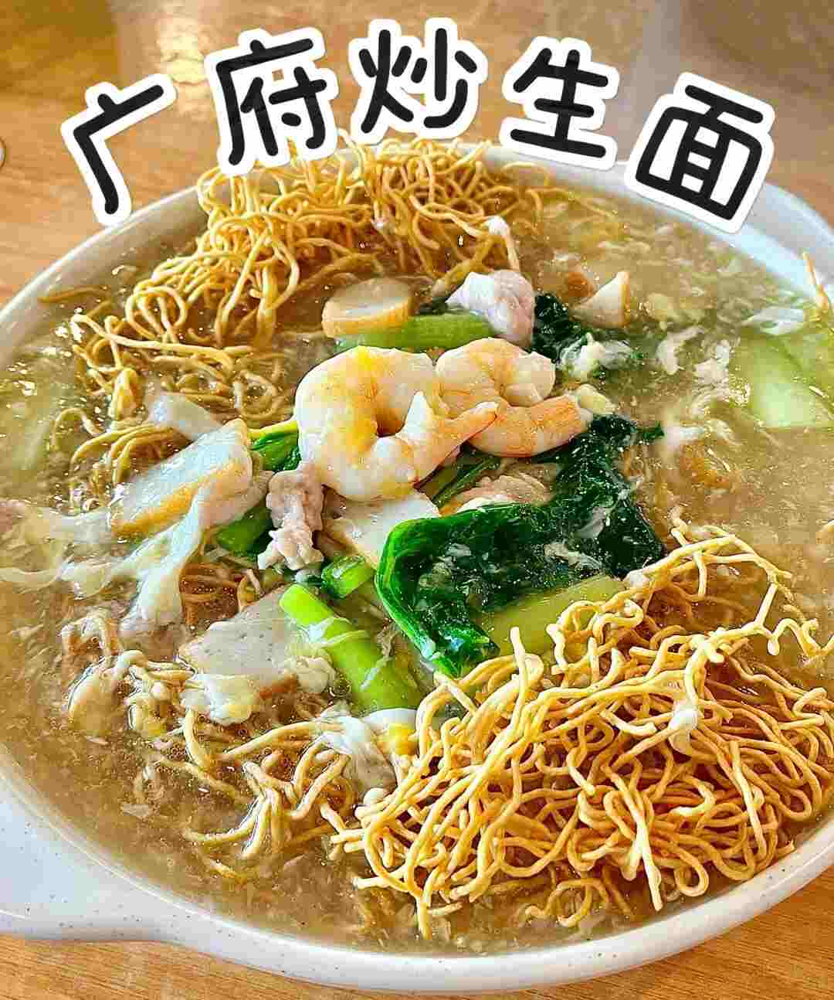

Cantonese Yee Mee
| Recipe Details: | |
|---|---|
| Level of difficulties | |
| Serving | 2 pax |
| Cooking duration | 18 minutes |
| Nutritional Facts: | |
| Calories | 250 kJ |
Ingredients
- Yee Mee - 2 pieces(about 80g each)
- Garlic cloves (chopped) - 8
- chicken or pork (sliced) - 200g
- For marination:
- Soy sauce - 3 tsp
- Salt - 2 pinches
- Shaoxing wine - 1 tbsp
- Sesame oil - 1 tbsp
- Prawns (peeled) - 6-8
- Fish cakes (sliced) - 1-2
- Choy Sum (cut to 2″ length) - 2-3 stalks
- Water - 2 cups
- Eggs - 2
- Corn starch (mixed with 4 tbsp water) - 2 tbsp
- Sauce (mixed together prior to cooking):
- Light soy sauce - 2 tbsp
- Sesame oil - 1 tbsp
- Oyster sauce - 1 tbsp
- Shaoxing wine (optional) - 1 tbsp
- Salt and Pepper - 1 dash
Method
- Heat up oil in pan/wok. Sauté garlic until fragrant and add meat slices. Stir fry until meat is 80% cooked and add prawns and fish cakes.
- When prawns are cooked, add 1 cup of water and choy sum. Let the water simmer and add corn starch mixture to get desired consistency. (You may add the yee mee here if you like to soften up the noodles).
- Add 1-2 tbsp of mixed sauce. Taste to adjust.
- Turn off heat and crack egg into the middle of the wok.
- Slowly swirl the egg around to get the egg strands. Pour gravy over noodles. Serve hot.